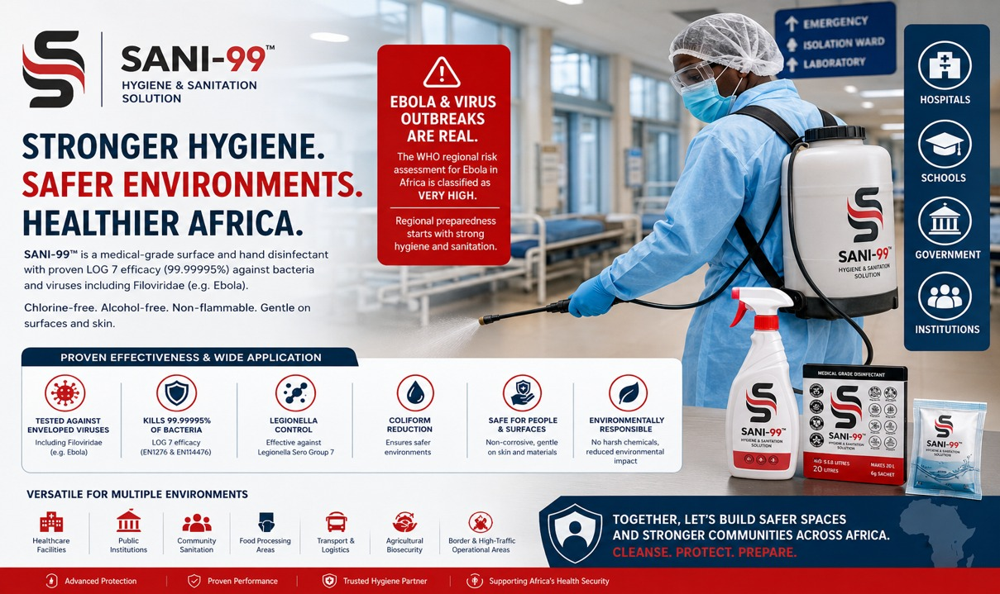
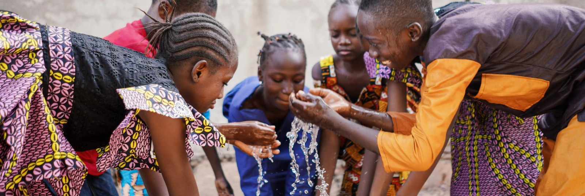

Environmental hygiene
Biosecurity, IPC discipline, and disinfection reserves for healthcare, food, and agricultural settings.
Ubuntu Life Resources connects trusted international solutions with regional demand through structured market development and commercial execution.
Environmental hygiene, emergency drinking water, and operational procurement capability — preparedness briefs for disaster, outbreak, and humanitarian response across Africa.
Three preparedness briefs — environmental hygiene, emergency drinking water, and operational procurement capability — aligned for governments, institutions, humanitarian programmes, and emergency-response agencies across Africa.
Biosecurity, IPC discipline, and disinfection reserves for healthcare, food, and agricultural settings.
Point-of-use treatment stockpiles for disaster, outbreak, and humanitarian corridors.
EXW supply, production capacity, packaging, logistics, and procurement documentation.

Strengthening Environmental Hygiene, Biosecurity & Infection-Control Readiness Across Africa
Public health emergencies can place significant pressure on healthcare systems, public institutions, transport infrastructure, and communities.
Disease outbreaks, flooding events, population displacement, water contamination, and sanitation challenges require rapid, practical, and scalable hygiene solutions that can support preparedness and response efforts.
Ubuntu Life Resources supports organisations across Africa through environmental hygiene, sanitation, biosecurity, and infection-control solutions designed to strengthen operational readiness and public health resilience.
Preparedness begins before an emergency occurs.
Strong outbreak readiness requires more than treatment capacity alone.
It also depends on:
The ability to deploy practical hygiene and sanitation solutions rapidly can play an important role in supporting operational environments during public health emergencies.
Supporting hospitals, clinics, laboratories, treatment centres, and healthcare environments through environmental hygiene and disinfection solutions.
Supporting schools, government buildings, border facilities, transport infrastructure, and public environments through sanitation preparedness initiatives.
Providing practical hygiene and sanitation support solutions suitable for emergency response, disaster recovery, and community-based interventions.
Supporting hygiene awareness, environmental sanitation, and public health resilience across communities and high-contact environments.
SANI-99™ is a medical-grade surface and hand disinfectant developed to support advanced environmental hygiene and infection-control programmes.
Key Features:
SANI-99™ has been designed to support scalable deployment and preparedness planning.
Benefits include:
This makes SANI-99™ suitable for organisations seeking to strengthen environmental hygiene readiness before emergencies occur.
We welcome engagement with:
One of the key advantages of SANI-99™ is its suitability for strategic preparedness planning, stockpiling, and rapid deployment across healthcare, institutional, transport, humanitarian, and public-sector environments.
Organisations and institutions can maintain environmental hygiene readiness capabilities before an emergency occurs, allowing for rapid deployment should the need arise.
As demonstrated during recent public health emergencies, outbreak response places significant pressure on healthcare facilities, border operations, public institutions, transport infrastructure, and emergency-response systems. Maintaining environmental hygiene preparedness before an emergency occurs allows governments, institutions, and healthcare organisations to respond more effectively should additional preparedness measures become necessary.
A strategic stockpile model can be implemented at national, state, provincial, district, and institutional level, enabling Ministries of Health, healthcare facilities, emergency management agencies, border authorities, humanitarian organisations, and public institutions to maintain scalable environmental disinfection capability.
Up to 500,000 litres of ready-to-use disinfectant capability
Approximately 250,000 litres of ready-to-use disinfectant capability
Approximately 100,000 litres or more based on operational requirements
This approach allows preparedness planning to be aligned with population density, healthcare infrastructure, transport activity, border movement, and public health risk profiles.
The lightweight powder formulation of SANI-99™ significantly reduces transportation and storage requirements compared with traditional pre-mixed disinfectants, making it highly practical for strategic reserves, emergency stockpiling programmes, outbreak preparedness initiatives, and large-scale deployment across Africa.

Transportation requirements for 2 million litres of bottled water

Transportation requirements for purifying 40 million litres of water using SANI AMANZI™
To ensure proper coordination, technical support, implementation planning, demonstrations, sample evaluations, deployment discussions, preparedness assessments, and any potential procurement processes, interested stakeholders are encouraged to engage through Ubuntu Life Resources.
Ubuntu Life Resources serves as the coordinating point for stakeholder engagement, deployment planning, technical support, demonstrations, sample requests, strategic stockpiling discussions, and implementation support.
This ensures that all discussions, technical information, deployment requirements, and procurement processes are managed efficiently from the outset and aligned with the specific needs of each country, institution, healthcare group, humanitarian organisation, government department, or emergency-response agency.
Our objective is not only to provide a product, but to support proactive preparedness discussions before an emergency occurs, ensuring that appropriate environmental hygiene resources, disinfection capabilities, and implementation support structures are available should they ever be required.
Ubuntu Life Resources remains committed to supporting stronger environmental hygiene, sanitation, biosecurity, and infection-control readiness across Africa.
Whether planning for future emergencies, strengthening institutional preparedness, or exploring scalable hygiene solutions, we welcome the opportunity to engage.

Strategic Water Security Planning for Disaster, Outbreak & Humanitarian Response Across Africa
Africa continues to face recurring emergencies that place millions of people at risk of unsafe drinking water and waterborne disease.
These challenges include:
Across the continent, access to safe drinking water is often one of the first critical needs during emergencies.
Without rapid access to safe drinking water:
Emergency drinking water preparedness should be viewed in the same way as emergency healthcare preparedness.
Countries maintain:
Safe drinking water preparedness should form part of national resilience planning.
Estimated Population:
Approximately 1.55 Billion People
54 Countries
Thousands of districts, provinces, counties and municipalities.
Even a single major flood, cholera outbreak, cyclone or displacement event can affect hundreds of thousands or millions of people within days.
1 Sachet = 20 Litres Safe Drinking Water
Countries experiencing:
Suggested National Reserve:
10 Million Sachets
Water Capacity:
200 Million Litres
Examples:
Suggested National Reserve:
5 Million Sachets
Water Capacity:
100 Million Litres
Suggested National Reserve:
2 Million Sachets
Water Capacity:
40 Million Litres
If a major emergency affects:
Emergency drinking water treatment capacity is already available and can be deployed immediately.
Communities do not need to wait for:
Safe drinking water can be produced directly within affected communities.
Unsafe water increases exposure to:
Sani Amanzi can support public health interventions by providing rapid access to safer drinking water while broader emergency response operations are mobilised.
Emergency reserves can be deployed through:
Instead of transporting millions of litres of water, governments and humanitarian organisations transport water treatment capacity.
This significantly reduces:
An Africa where every country maintains emergency drinking water reserves capable of protecting vulnerable populations during floods, cholera outbreaks, droughts, displacement events, humanitarian crises and public health emergencies.
Preparedness saves lives.
Safe water saves lives.
Resilient communities strengthen nations.
For stakeholder engagement, deployment planning, demonstrations, technical discussions, samples, partnership opportunities and implementation support:
Sanchia-Lynn Smit
Ubuntu Life Resources (Pty) Ltd
Email: sanchia@ubuntuliferesources.co.za
WhatsApp: +27 79 658 8189
Ubuntu Life Resources supplies scalable preparedness solutions for governments, humanitarian organisations, NGOs, institutional buyers and commercial partners through an Ex-Factory (EXW) supply model.
Our manufacturing capability supports both routine procurement and large-scale preparedness programmes.
| Product | Standard Production Batch | Monthly Capacity | Annual Capacity |
|---|---|---|---|
| SANI AMANZI™ | 50,000 sachets | Approx. 5 million sachets | Approx. 60 million sachets |
| SANI-99™ Medical Grade | 50,000 sachets | Approx. 5 million sachets | Approx. 60 million sachets |
| SANI-99™ AGRI | 15,000 sachets | Approx. 1.5 million sachets | Approx. 18 million sachets |
Production capacity can be increased depending on operational requirements and production scheduling.
Bulk packaging is available for large procurement programmes.
Available packaging includes:
For large-volume orders (typically 5 tonnes or more), products may also be supplied in 25 kg bags to improve international shipping efficiency.
Most products are manufactured to order.
Typical lead times:
Lead times may vary depending on order volume, printing requirements and production scheduling.
Container Loading Capacity:
Approximate Shipping Weight:
Shelf Life:
(Subject to recommended storage conditions.)
Technical documentation is available upon request to support procurement evaluations.
Available documentation includes:
Our operational capability has been developed to support:
Our objective is to provide practical, scalable solutions that enable organisations to strengthen preparedness before emergencies occur.
Whether you are scoping hygiene reserves, water-security stockpiles, or operational procurement — start with a structured conversation on scope, territories, and deployment timelines.